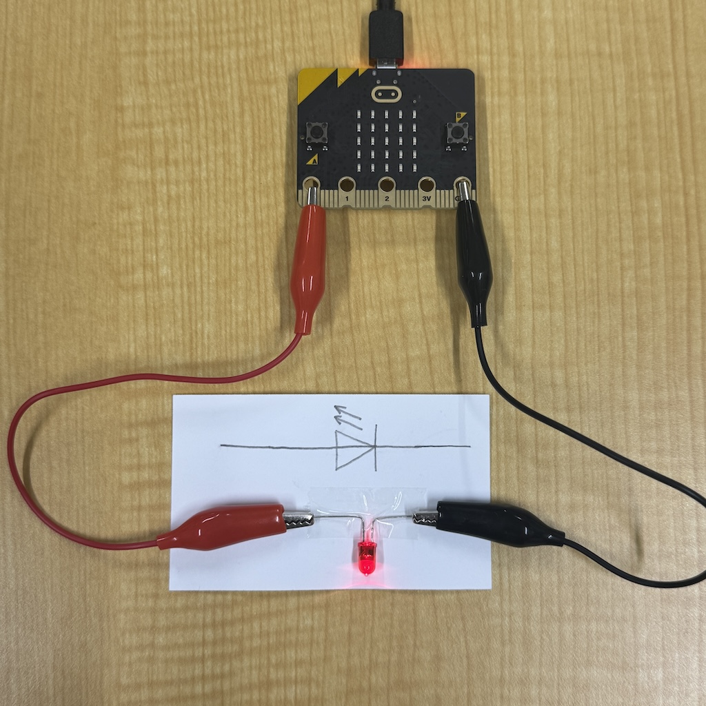
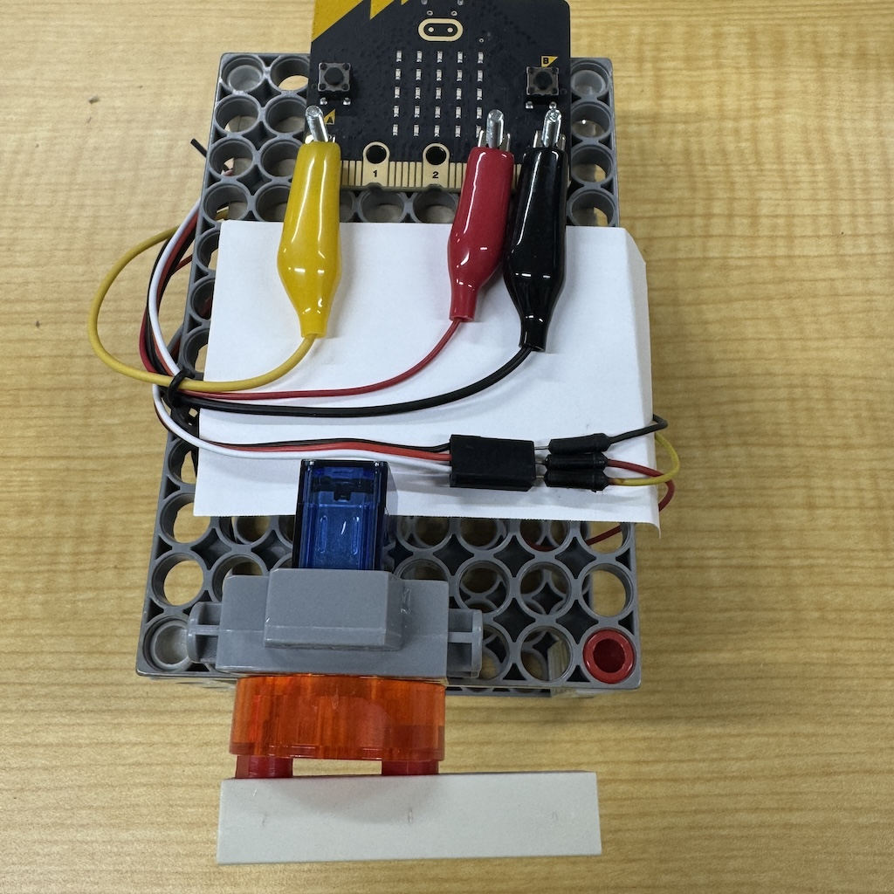

ワニ口クリップで外部の部品をピン（P0、P1、P2）につないで制御します。
| 命令の書き方 | 働き・説明 |
|---|---|
| 「P0」をマイクロビット端子入力モード設定 | 指定した端子（P0、P1、P2）を「入力（計測）」に使う準備をします。 |
| 「P0」をマイクロビット端子出力モード設定 | 指定した端子（P0、P1、P2）を「出力（制御）」に使う準備をします。 |
| 「P0」のマイクロビット端子デジタル入力 | 端子に電気が流れていれば 1、流れていなければ 0 を返します。 |
| 1023を「P0」へマイクロビット端子アナログ出力 | 指定した端子（P0、P1、P2）に電流を送ります。強さは0（弱い）〜1023（強い）で指定。 |
| 90を「P0」へマイクロビットサーボ出力 | 指定した端子（P0、P1、P2）につないだサーボモータを、指定した角度（この例では90度）に動かします。 |
| 説明 | つなぎ方の例 |
|---|---|
| P0端子(赤色)にLEDのアノードを，GND端子(黒色)にLEDのカソードをつないだ例 |  |
| P0端子(黄色)にサーボモータの白色を，3V端子(赤色)にサーボモータの赤色を，GND端子(黒色)にサーボモータの黒色をつないだ例 |  |